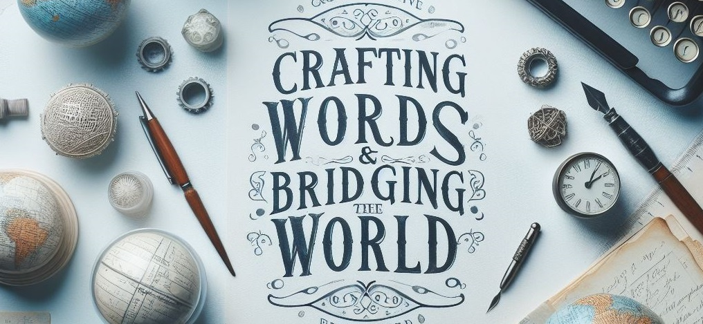

20年の実績が支える多言語戦略とグローバル展開支援
Lexicon Linkは、日本企業の価値を世界へ、そして世界の革新を日本へ繋ぐ多言語ソリューションのスペシャリストです。20年にわたる実務経験に基づき、あらゆる言語ペアにおいて最高品質のコミュニケーションを支援します。
少数精鋭（ブティック型）の品質管理
私たちは規模ではなく「質」を追求します。ベテランのリード・リンギストが全案件を直接監修。大規模エージェンシーにはない細部へのこだわりと、ビジネスの成功に直結する正確な文体を保証します。
多言語ローカライゼーション & トランスクリエーション
IT、製造、金融、法務など多岐にわたる専門分野に対応。単なる翻訳を超え、現地の文化や感性に適応させる「トランスクリエーション」を通じて、貴社のメッセージを世界中に響く言葉へと昇華させます。
グローバル展開アドバイザリー
海外進出や製品のグローバル展開において、文化的適応は成功の鍵となります。スタートアップの初期市場参入から、大手企業の拠点設立まで。20年の知見を活かし、現地の商習慣に合わせた戦略的ロードマップを共に策定します。
プロフェッショナル通訳 & エグゼクティブ支援
役員交渉や国際カンファレンスなど、極めて機密性の高い現場での言語サポートを提供。徹底した守秘義務と、エグゼクティブに相応しい洗練された振る舞いで、円滑な国際ビジネスを支えます。
実績と信頼 — 信頼できるパートナーとして
国内大手から急成長中のベンチャー企業まで、20年にわたり多種多様なプロジェクトを完遂してまいりました。徹底した機密保持のもと、貴社のグローバルビジネスを支え続ける信頼できるパートナーとして、確かな品質をお約束します。